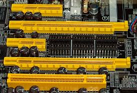
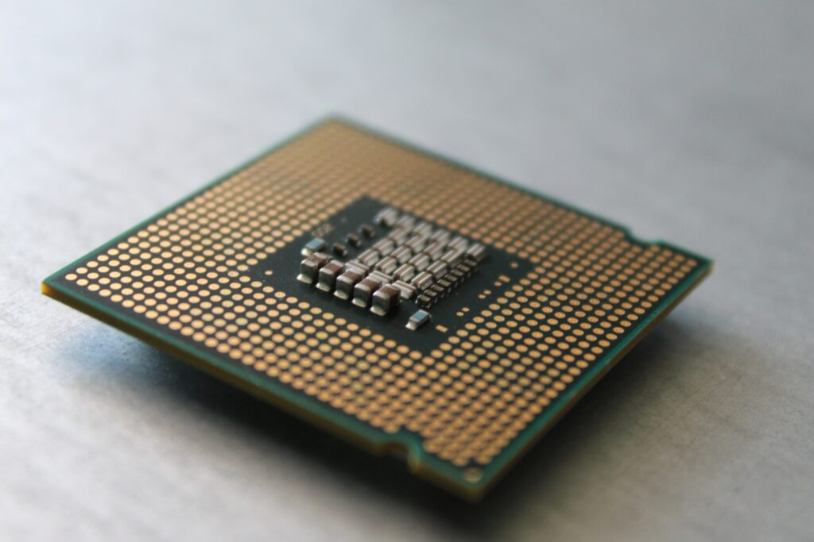
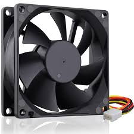
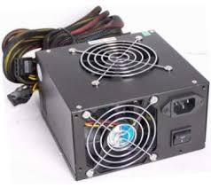
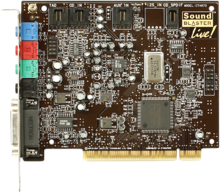
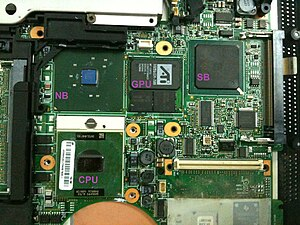
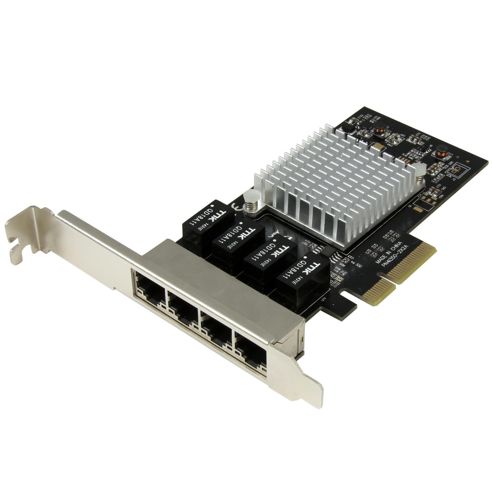
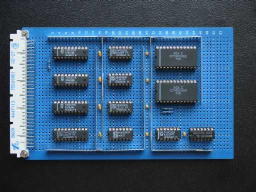
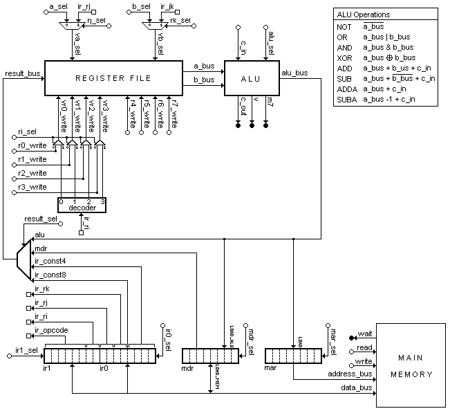

Components Of C.P.U
| Seriel No. |
Name |
Image |
Description |
| 01 |
MotherBoard |
 |
A motherboard (also called mainboard, main circuit board, MB, mobo, base board, system board, or, in
Apple computers, logic board) is the main printed circuit board (PCB) in general-purpose computers and
other expandable systems. It holds and allows communication between many of the crucial electronic
components of a system, such as the central processing unit (CPU) and memory, and provides connectors
for other peripherals. Unlike a backplane, a motherboard usually contains significant sub-systems, such
as the central processor, the chipset's input/output and memory controllers, interface connectors, and
other components integrated for general use. |
| 02 |
Memory |
 |
Computer data storage or digital data storage is a technology consisting of computer components and
recording media that are used to retain digital data. It is a core function and fundamental component of
computers.The central processing unit (CPU) of a computer is what manipulates data by performing
computations. In
practice, almost all computers use a storage hierarchy,[1]: 468–473 which puts fast but expensive and
small storage options close to the CPU and slower but less expensive and larger options further away.
Generally, the fast[a] technologies are referred to as "memory", while slower persistent technologies
are referred to as "storage".
Even the first computer designs, Charles Babbage's Analytical Engine and Percy Ludgate's Analytical
Machine, clearly distinguished between processing and memory (Babbage stored numbers as rotations of
gears, while Ludgate stored numbers as displacements of rods in shuttles). |
| 03 |
Buses |
 |
In computer architecture, a bus (historically also called a data highway[1] or databus) is a
communication system that transfers data between components inside a computer or between computers.[2]
It encompasses both hardware (e.g., wires, optical fiber) and software, including communication
protocols.[3] At its core, a bus is a shared physical pathway, typically composed of wires, traces on a
circuit board, or busbars, that allows multiple devices to communicate. To prevent conflicts and ensure
orderly data exchange, buses rely on a communication protocol to manage which device can transmit data
at a given time.
|
| 04 |
Register |
" |
A processor register is a quickly accessible location available to a computer's processor.[1] Registers
usually consist of a small amount of fast storage, although some registers have specific hardware
functions, and may be read-only or write-only. In computer architecture, registers are typically
addressed by mechanisms other than main memory, but may in some cases be assigned a memory address e.g.
DEC PDP-10, ICT 1900.[2]
Almost all computers, whether load/store architecture or not, load items of data from a larger memory
into registers where they are used for arithmetic operations, bitwise operations, and other operations,
and are manipulated or tested by machine instructions. Manipulated items are then often stored back to
main memory, either by the same instruction or by a subsequent one. Modern processors use either static
or dynamic random-access memory (RAM) as main memory, with the latter usually accessed via one or more
cache levels. |
| 05 |
Colling Fan |
 |
A computer fan is any fan inside, or attached to, a computer case used for active cooling. Fans are used
to draw cooler air into the case from the outside, expel warm air from inside and move air across a heat
sink to cool a particular component. Both axial and sometimes centrifugal (blower/squirrel-cage) fans
are used in computers. Computer fans commonly come in standard sizes, such as 92 mm, 120 mm (most
common), 140 mm, and even 200–220 mm. Computer fans are powered and controlled using 3-pin or 4-pin fan
connectors.
|
| 06 |
RAM |
 |
Random-access memory (RAM; /ræm/) is a form of electronic computer memory that can be read and changed
in any order, typically used to store working data and machine code.[1][2] A random-access memory device
allows data items to be read or written in almost the same amount of time irrespective of the physical
location of data inside the memory, in contrast with other direct-access data storage media (such as
hard disks and magnetic tape), where the time required to read and write data items varies significantly
depending on their physical locations on the recording medium, due to mechanical limitations such as
media rotation speeds and arm movement. |
| 07 |
Graphics Processing Unit |
 |
A graphics processing unit (GPU) is a specialized electronic circuit initially designed for digital
image processing and to accelerate computer graphics, being present either as a discrete video card or
embedded on motherboards, mobile phones, personal computers, workstations, and game consoles. After
their initial design, GPUs were found to be useful for non-graphic calculations involving embarrassingly
parallel problems due to their parallel structure. GPUs ability to perform vast numbers of calculations
rapidly has led to their adoption in diverse fields including artificial intelligence (AI) where it
excels at handling data-intensive and computationally demanding tasks. Other non-graphical uses include
the training of neural networks and cryptocurrency mining. |
| 08 |
Power Supply Unit |
 |
A power supply unit (PSU) converts mains AC to low-voltage regulated DC power for the internal
components of a desktop computer. Modern personal computers universally use switched-mode power
supplies. Some power supplies have a manual switch for selecting input voltage, while others
automatically adapt to the main voltage.
Most modern desktop personal computer power supplies conform to the ATX specification, which includes
form factor and voltage tolerances. While an ATX power supply is connected to the mains supply, it
always provides a 5-volt standby (5VSB) power so that the standby functions on the computer and certain
peripherals are powered. |
| 09 |
Optical Drive |
 |
In computing, an optical disc drive (ODD) is a disc drive that uses laser light or electromagnetic waves
within or near the visible light spectrum as part of the process of reading or writing data to or from
optical discs. Some drives can only read from certain discs, while other drives can both read and
record. Those drives are called burners or writers since they physically burn the data onto on the
discs. Compact discs, DVDs, and Blu-ray discs are common types of optical media which can be read and
recorded by such drives.
Although most laptop manufacturers no longer have optical drives bundled with their products, external
drives are still available for purchase separately. |
| 10 |
Sound Card |
 |
A sound card (also known as an audio card) is an internal expansion card that provides input and output
of audio signals to and from a computer under the control of computer programs. The term sound card is
also applied to external audio interfaces used for professional audio applications.
Sound functionality can also be integrated into the motherboard, using components similar to those found
on plug-in cards. The integrated sound system is often still referred to as a sound card. Sound
processing hardware is also present on modern video cards with HDMI to output sound along with the video
using that connector; previously they used a S/PDIF connection to the motherboard or sound card. |
| 11 |
Southbridge Chipset |
 |
On older personal computer motherboards, the southbridge is one of the two chips in the core logic
chipset, handling many of a computer's input/output functions. The other component of the chipset is the
northbridge, which generally handles high speed onboard communications.
A southbridge chipset handles functions such as USB, audio, the system firmware, the lower speed
PCI/PCIe buses, the IOAPIC interrupt controller, the SATA storage, the historical PATA storage, the NVMe
storage, and low speed buses such as ISA, LPC, SPI, and/or eSPI.[1][2] Different combinations of
southbridge and northbridge chips are possible,[3] but these two kinds of chips are designed to work
together. |
| 12 |
northbridge Chipset |
 |
In computing, a northbridge (also host bridge, or memory controller hub) is a microchip that comprises
the core logic chipset architecture on motherboards to handle high-performance tasks, especially for
older personal computers. It is connected directly to a CPU via the front-side bus (FSB), and is usually
used in conjunction with a slower southbridge to manage communication between the CPU and other parts of
the motherboard.[1]
|
| 13 |
Ethernet Card |
 |
Ethernet (/ˈiːθərnɛt/ EE-thər-net) is a family of wired computer networking technologies commonly used
in local area networks (LAN), metropolitan area networks (MAN) and wide area networks (WAN).[1] It was
commercially introduced in 1980 and first standardized in 1983 as IEEE 802.3. Ethernet has since been
refined to support higher bit rates, a greater number of nodes, and longer link distances, but retains
much backward compatibility. Over time, Ethernet has largely replaced competing wired LAN technologies
such as Token Ring, FDDI and ARCNET.The original 10BASE5 Ethernet uses a thick coaxial cable as a shared
medium. |
| 14 |
Arithmetic Operations |
 |
Ethernet (/ˈiːθərnɛt/ EE-thər-net) is a family of wired computer networking technologies commonly used
in local area networks (LAN), metropolitan area networks (MAN) and wide area networks (WAN).[1] It was
commercially introduced in 1980 and first standardized in 1983 as IEEE 802.3. Ethernet has since been
refined to support higher bit rates, a greater number of nodes, and longer link distances, but retains
much backward compatibility. Over time, Ethernet has largely replaced competing wired LAN technologies
such as Token Ring, FDDI and ARCNET.
The original 10BASE5 Ethernet uses a thick coaxial cable as a shared medium. |
| 15 |
Microcode Unit |
 |
In processor design, microcode serves as an intermediary layer situated between the central processing
unit (CPU) hardware and the programmer-visible instruction set architecture of a computer, also known as
its machine code.[1][page needed] It consists of a set of hardware-level instructions that implement the
higher-level machine code instructions or control internal finite-state machine sequencing in many
digital processing components. While microcode is utilized in Intel and AMD general-purpose CPUs in
contemporary desktops and laptops, it functions only as a fallback path for scenarios that the faster
hardwired control unit is unable to manage.[2] |